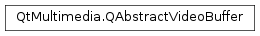

QAbstractVideoBuffer¶
Synopsis¶
Functions¶
- def
handleType()
Detailed Description¶
The
PySide2.QtMultimedia.QAbstractVideoBufferclass is an abstraction for video data.The
PySide2.QtMultimedia.QVideoFrameclass makes use of aPySide2.QtMultimedia.QAbstractVideoBufferinternally to reference a buffer of video data. Quite often video data buffers may reside in video memory rather than system memory, and this class provides an abstraction of the location.In addition, creating a subclass of
PySide2.QtMultimedia.QAbstractVideoBufferwill allow you to construct video frames from preallocated or static buffers, in cases where thePySide2.QtMultimedia.QVideoFrameconstructors taking aPySide2.QtCore.QByteArrayor aPySide2.QtGui.QImagedo not suffice. This may be necessary when implementing a new hardware accelerated video system, for example.The contents of a buffer can be accessed by mapping the buffer to memory using the
PySide2.QtMultimedia.QAbstractVideoBuffer.map()function, which returns a pointer to memory containing the contents of the video buffer. The memory returned byPySide2.QtMultimedia.QAbstractVideoBuffer.map()is released by calling thePySide2.QtMultimedia.QAbstractVideoBuffer.unmap()function.The
PySide2.QtMultimedia.QAbstractVideoBuffer.handle()of a buffer may also be used to manipulate its contents using type specific APIs. The type of a buffer’s handle is given by thePySide2.QtMultimedia.QAbstractVideoBuffer.handleType()function.See also
-
class
PySide2.QtMultimedia.QAbstractVideoBuffer(type)¶ Parameters: type – PySide2.QtMultimedia.QAbstractVideoBuffer.HandleTypeConstructs an abstract video buffer of the given
type.
-
PySide2.QtMultimedia.QAbstractVideoBuffer.HandleType¶ Identifies the type of a video buffers handle.
Constant Description QAbstractVideoBuffer.NoHandle The buffer has no handle, its data can only be accessed by mapping the buffer. QAbstractVideoBuffer.GLTextureHandle The handle of the buffer is an OpenGL texture ID. QAbstractVideoBuffer.XvShmImageHandle The handle contains pointer to shared memory XVideo image. QAbstractVideoBuffer.CoreImageHandle The handle contains pointer to macOS CIImage. QAbstractVideoBuffer.QPixmapHandle The handle of the buffer is a PySide2.QtGui.QPixmap.QAbstractVideoBuffer.EGLImageHandle The handle of the buffer is an EGLImageKHR. QAbstractVideoBuffer.UserHandle Start value for user defined handle types.
-
PySide2.QtMultimedia.QAbstractVideoBuffer.MapMode¶ Enumerates how a video buffer’s data is mapped to system memory.
Constant Description QAbstractVideoBuffer.NotMapped The video buffer is not mapped to memory. QAbstractVideoBuffer.ReadOnly The mapped memory is populated with data from the video buffer when mapped, but the content of the mapped memory may be discarded when unmapped. QAbstractVideoBuffer.WriteOnly The mapped memory is uninitialized when mapped, but the possibly modified content will be used to populate the video buffer when unmapped. QAbstractVideoBuffer.ReadWrite The mapped memory is populated with data from the video buffer, and the video buffer is repopulated with the content of the mapped memory when it is unmapped. See also
PySide2.QtMultimedia.QAbstractVideoBuffer.mapMode()PySide2.QtMultimedia.QAbstractVideoBuffer.map()
-
PySide2.QtMultimedia.QAbstractVideoBuffer.m_type¶
-
PySide2.QtMultimedia.QAbstractVideoBuffer.handle()¶ Return type: object Returns a type specific handle to the data buffer.
The type of the handle is given by
PySide2.QtMultimedia.QAbstractVideoBuffer.handleType()function.
-
PySide2.QtMultimedia.QAbstractVideoBuffer.handleType()¶ Return type: PySide2.QtMultimedia.QAbstractVideoBuffer.HandleTypeReturns the type of a video buffer’s handle.
-
PySide2.QtMultimedia.QAbstractVideoBuffer.mapMode()¶ Return type: PySide2.QtMultimedia.QAbstractVideoBuffer.MapModeReturns the mode a video buffer is mapped in.
See also
PySide2.QtMultimedia.QAbstractVideoBuffer.map()
-
PySide2.QtMultimedia.QAbstractVideoBuffer.release()¶ Releases the video buffer.
PySide2.QtMultimedia.QVideoFramecalls when the buffer is not used any more and can be destroyed or returned to the buffer pool.The default implementation deletes the buffer instance.
-
PySide2.QtMultimedia.QAbstractVideoBuffer.unmap()¶ Releases the memory mapped by the
PySide2.QtMultimedia.QAbstractVideoBuffer.map()function.If the
QAbstractVideoBuffer.MapModeincluded theQAbstractVideoBuffer::WriteOnlyflag this will write the current content of the mapped memory back to the video frame.See also
PySide2.QtMultimedia.QAbstractVideoBuffer.map()
© 2018 The Qt Company Ltd. Documentation contributions included herein are the copyrights of their respective owners. The documentation provided herein is licensed under the terms of the GNU Free Documentation License version 1.3 as published by the Free Software Foundation. Qt and respective logos are trademarks of The Qt Company Ltd. in Finland and/or other countries worldwide. All other trademarks are property of their respective owners.